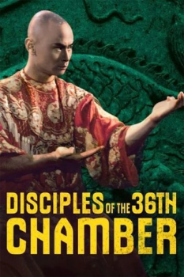

Also known as:Disciples of the Master Killer
Country:ZH, 89 minutes
Spoken languages:Mandarin
Genres:Action
Director(s):Lau Kar-leung
Writer(s):Lau Kar-leung
Video Codec:Unknown
Number: 302


Certification:
Storyline:
Monk San Te tries to support and protect Shaolin and her Fang Shih-yu who purposely attacks corrupt Ching officials.
Cast:


Medium: Original DVD,
Loaned: No
Aspect ratio: Unknown